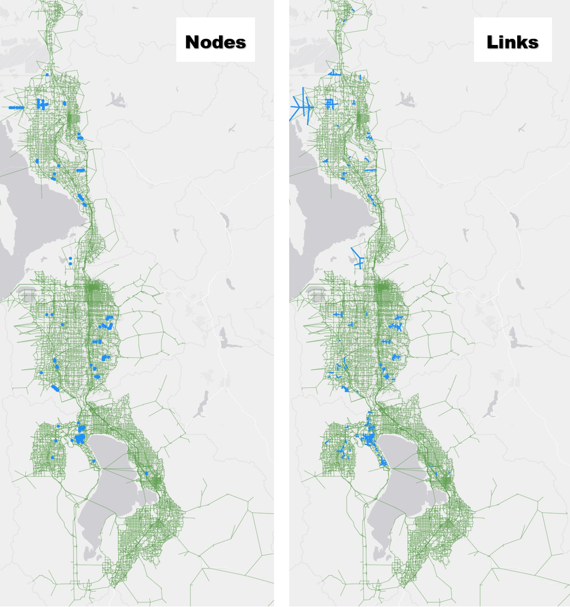

Changes to Input Files
Traffic Analysis Zone
Changes to TAZ Attributes
The following attributes in the TAZ shapefile were updated (note, TAZ geometry and numbering were unchanged).
City Name
- The value “Mill Creek” was replaced with “Millcreek” in the CITY_NAME field
- The CITY_UGRC and CITY_FIPS fields were updated to be consistent with CITY_NAME
- A new City district shapefile was created based on updated the city name and ID fields
Developable Acres
- The DEVACRES and DEVPBLEPCT fields were set to 0 in TAZs with no developable land. A new point shapefile,
undevelopable-points_WF.shp, was added to the1_Inputs\1_TAZ\_Source\EnvConstraintsfolder to keep track of these override undevelopable TAZs. Figure 1 shows which TAZs had their fields set to 0.
Code
Rename TAZ Shapefile
The TAZ shapefile was renamed from TAZ.shp to WFv901_TAZ_{date-stamp}.shp to comply with the new model file naming convention determined by the Interagency Modeling Technical Committee (IMTC). The TAZ_DBF variable was updated in the Scenarios\_default\ControlCenter.block files.
Highway Network
Network Changes due to Segment Shapefile Updates
The highway network was updated to coincide with the updates made to the segment shapefile (see the Segment Shapefile section of this report). Primarily, these changes consisted of adding nodes, splitting links, and updating the SEGID link field. However, a few new corridors were added to the network and some link/nodes positions were changed to better align with the segment shapefile. The edits made to the network node and link geometry to accommodate desired segment updates constitute the vast majority of the geometric changes made to the network in version 9.0.1. Because of the large number of edits made to the highway link-node structure, the version 9.0.1 highway network is not backward compatible with version 9.0.0 highway network.
The complexity of the frontage road system in the highway network in future scenarios caused the value in the SEGID field to not be unique for all scenarios. To allow for a link’s SEGID to change between scenarios, a set of SEGID exception fields were added to the Master Network. When SEGID changes in a scenario, the new SEGID is coded into the scenario’s corresponding SEGID exception field. This will trigger an override of the SEGID calculation in the network processor script. Blank values use the primary SEGID field, i.e. no override. The field names for the SEGID exception field set follow the naming convention used for the lane and functional type field set:
- Base and TIP years
- SGX_2019
- SGX_2023
- SGX_2028
- Fiscally Constrained Plan years
- SGX23_32
- SGX23_42
- SGX23_50
- Unfunded Need Plan years
- SGX23_32UF
- SGX23_42UF
- SGX23_50UF
A new variable, SegIdExField, was added to the 1ControlCenter.block file to select which SEGID exception field to use in the scenario.
General Maintenance & Corrections
Clean up work was done to the highway network to fix errors or to do general maintenance. Below is a list of specific changes made to the highway network. Note that the project list coded into the v9.0.1 highway network represents the Regional Transportation Plans adopted May 2023.
Nodes
- MAG_NODE field was corrected for 16 nodes
- GEOGKEY field was corrected in 10 instances
- The PNR fields were updated for two nodes at the Tooele express bus park and ride location where PNR values were set to 0.
Links
- Updated connections to TAZ 90 and removed 1500 S in Brigham City between 775 W and Hwy 89 (not yet existing or planned in future phases)
- Connected 4600 S from Harrison Blvd to Skyline Drive south of Weber St Campus
- Updated connection for West Weber Corridor to Hwy 89 and corrected some centroid connections
- Removed Arsenal Rd in HAFB from 2015-2028 and left connections in TAZs 647, 632, and 655 to the base to the east only
- Updated I-15 Northbound from Park Ln to 200 N to reflect 4 lanes
- Updated West Davis/West Weber corridor north of SR 193 to a functional type of 12
- Fixed Shephard Ln disconnect
- Turned off link for 400 N / North St where it does not yet cross the rail tracks
- Removed floating link on 700 S just west of 3000 W in West Pointe
- Updated 4700 S westbound from 4000 W to 4800 to reflect 2 lanes
- Adjusted the 7400 South from Oquirrh Blvd to MVC RTP Project to be a grade separated crossing at MVC instead of at-grade
- Turned on Herriman Phase 1 project at Silver Sky Dr
- Added in 520 W (Seg ID 3440_005.8) between 400 N and 2nd St
- Added in 3200 W from 2100 N to 3500 N and 3500 N from 3200 W to 2200 W (Scannell Swaner development)
- Added in 4420 W between 4700 W and 5400 S (used Seg ID from UDOT)
- Turned on links for 3800 S between 220 W and 1700 W
- Added in 3785 S between 6400 W and 7200 W
- Added in 6000 W between 3500 S and 4100 S
- Removed local connection between 11800 S and Lake Ave at MVC
- Removed local connection between 14600 S and 14400 S at Redwood Rd
- Aligned Doubleday and Sunrise Ranch in Mapleton with existing roads
- Turned on Ring Road links in Saratoga Springs to match existing conditions
- Turned off 2023 road between Pony Express Parkway and Temple Area (non-foothill)
- Fixed network in Saratoga and Eagle Mountain to match existing roadway network
- Extended Foothill frontage roads down to Lariat Blvd in Saratoga Springs
- Turned on Sunset Drive in Eagle Mountain for 2019, 2023, and 2028
- Turned on Mt Airey Drive in Eagle Mountain for 2019, 2023, and 2028
- Fixed centroid connection to TAZs 42, 260, 1992, 1993, 2005, and 2006 and edited other centroid connectors to fix unconnected zones
- Connected centroid to TAZ 931 to unfunded network
- Realigned links and added links based on UDOT LRS updates on the following corridors:
- 500 W / 3700 W between Bluff Ridge Blvd and Antelope Dr
- Station Pkwy / Burke Ln between 1525 W and Park Ln
- 1525 W between Station Pkwy / Burke Ln and Clark Ln
- North Frontage Rd / 8000 W / 1400 N between 7200 W and Utah State Prison and Correctional Facility
- Gordon Ave
- Cherry Ln
- 13200 S between 1300 W and Highland
- Herriman Main St
- Porter Rockwell Blvd
- Layton Pkwy
- Hill Field Rd
- 2700 W between WDC and Hill Field Rd
- 2200 W between Layton Pkwy and 700 S
- 1800 S to 2100 S Connector between SR-126 and 2700 W
- 3600 S to 3300 S Connector between 2700 W and 3600 W
- Depot St between 700 S and 1000 E
- Shadow Valley between SR-203 and Skyline Pkwy
- Frontage Rd between Shepard Ln and Burton Ln
- Petunia Wy, 9800 S, 17000 E collector roads between 9400 S and Sego Lily Dr and 1300 E and Eastdell Dr
- Lincoln Ln and 2000 E collector roads between Highland Dr and 2700 E and 3900 S and 4500 S
- Fixed HOT23_32 through HOT23_50UF fields to correctly reflect the RTP projects from Farmington to the Utah/Salt Lake County line
Between the edits made to the highway network for the segment shapefile update and the general network maintenance, approximately 150 nodes and 900 links were added to the highway network in version 9.0.1, the bulk of which occurred in Saratoga Springs, Eagle Mountain, Weber County, Holladay, Sandy, and Draper. Figure 2 highlights the locations of the new nodes and links added to the version 9.0.1 network.

Rename Master Network
The master network was renamed from MasterNet_v9 – {date-stamp}.net to WFv901_MasterNet_{date-stamp}.net to comply with the new model file naming convention determined by the Interagency Modeling Technical Committee (IMTC). The MasterPrefix variable was updated in the Scenarios\_default\ControlCenter.block files.
Transit Networks
Changes to Transit Line Files
The changes made to the transit line files were to make the line files compatible with the highway network geometry edits, primarily where links were split along a transit route. The project list coded into the v9.0.1 transit network represents the Regional Transportation Plans adopted May 2023.
Segment Shapefile
Changes to Segment Attributes and Geometry
The segment shapefile was updated extensively to allow for future segment-level processing of the transit results, to develop a more accurate traffic volume forecast, and to correct for compatibility issues with the highway network. Hundreds of new segments were added and many were deleted or adjusted to better reflect the current and future physical roadway. Because of the large number of edits made to the segments, the segment shapefile and any segment reporting in version 9.0.1 are not backward compatible with version 9.0.0.
Overall, there were approximately 5000 changes to the SEGID value between version 9.0.0 and version 9.0.1. This includes the addition of around 3000 new SEGID values and the renaming of around 2000 SEGID values. SEGID shapefile edits were also reflected in the highway network. Table 1 gives the percentage of SEGID changes by county. The majority of SEGID updates occurred in Utah County followed by Salt Lake County.
| County | Change in SEGID |
|---|---|
| Box Elder | 1% |
| Weber | 3% |
| Davis | 6% |
| Salt Lake | 21% |
| Utah | 69% |
Eagle Mountain saw the most SEGID changes (22%), followed by Saratoga Springs (8%), Santaquin (6%), West Jordan (5%), and Payson (5%).
Figure 3 shows where SEGIDs changes occurred between versions 9.0.0 and 9.0.1 in the model network. This provides a representation of where new and adjusted segments are located in segment shapefile.

Renamed Segment Shapefile
The segment shapefile was renamed from Segments_WF – {date-stamp}.shp to WFv901_Segments_{date-stamp}.shp to comply with statewide naming standards as determined by the Interagency Modeling Technical Committee (IMTC).
Added _Segment Processing Tools Folder
A new methodology was developed and utilized for updating the segment shapefile. This process is documented in a Jupyter notebook file 0-How-to-Prep-Segments-for-TDM.ipynb located in a new folder 1_Inputs\6_Segment\_Segment Processing Tools. In short, this script outlines five steps to be followed when developing new and updated segments.
- Ensure consistency between the master network and segment shapefile.
- Unique SEGIDs in shapefile.
- Correct DISTANCE.
- Correct LRS Segments BMP, EMP, and DISTANCE.
- TDM Network includes all SEGIDs.
- Segment Shapefile includes all SEGIDs.
- Correct geographic coordinate system.
- Add Geographic Keys onto Segments (SUBAREAID, PLANAREA, CO_FIPS).
- Add AADTs onto Segments.
- Add Factors from Continuous Count Station groups.
- Add final forecasts from forecasts process.
This new process ensures the segment shapefile is ready for the traffic volume forecasts map, as well as ensures only the needed and relevant attributes are included.